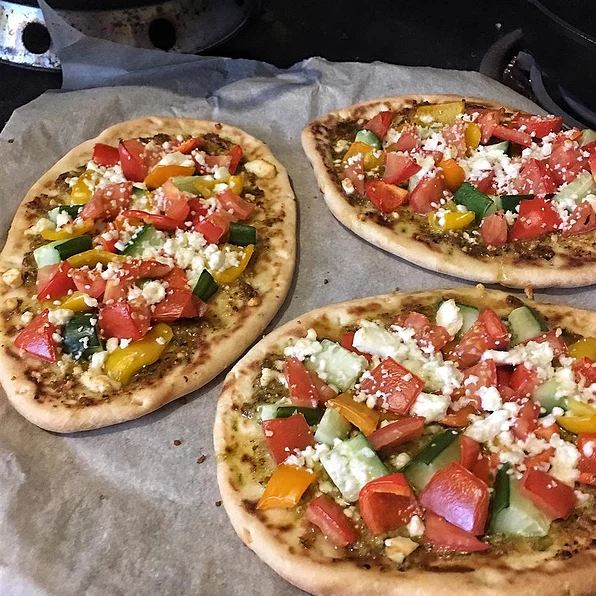

A great alternative to your regular pizza.
This easy pesto pizza recipe ticks all the boxes, and then some. It requires just a handful of ingredients, and is a breeze to make if you already have pizza dough in the freezer.
Ingredients
- 1 (12 inch) pre-baked pizza crust
- ½ cup pesto
- 1 ripe tomato, chopped
- ½ cup green bell pepper, chopped
- 1 (2 ounce) can chopped black olives, drained
- ½ small red onion, chopped
- 1 (4 ounce) can artichoke hearts, drained and sliced
- 1 cup crumbled feta cheese
Directions
- Preheat oven to 450 degrees F (230 degrees C).
- Spread pesto on pizza crust. Top with tomatoes, bell peppers, olives, red onions, artichoke hearts and feta cheese.
- Bake for 8 to 10 minutes, or until cheese is melted and browned.
Nutrition Facts
Per Serving: 682 calories; protein 49.3g; carbohydrates 27.3g; fat 40.3g; cholesterol 195.7mg; sodium 955.6mg.
Return to top
Return to main page